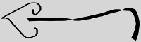
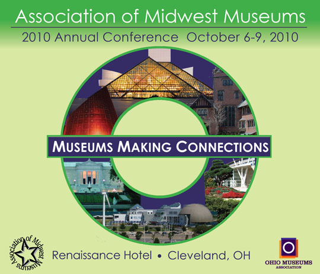

AndrewRoback.com
Design Gallery


A team project to design the cover for the 2010 Midwest Museum Association Conference. The cover was modified and selected by the client (click here to view the final design). All three versions represent different types of distribution methods: color, for the final program cover; grayscale, for black and white printing applications; and a JPEG web image, for attaching to email announcements.
